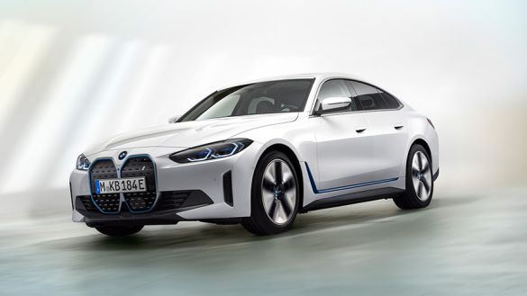
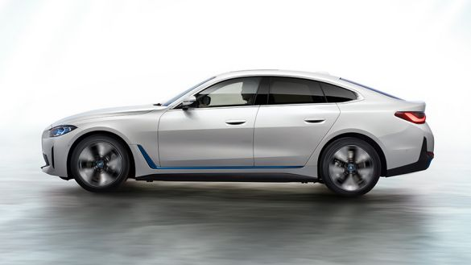
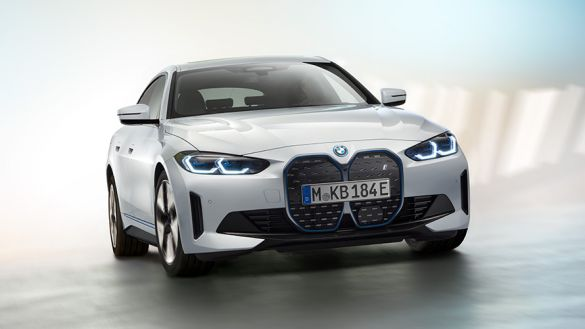
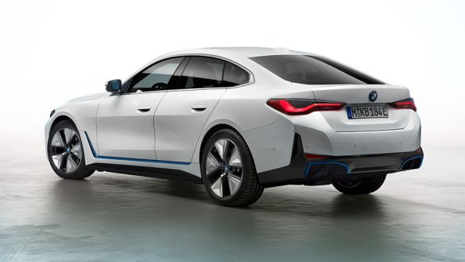

The first-ever purely electric Gran Coupé will guarantee plenty of driving pleasure with a range of up to 590 kilometres*. The four-door vehicle promises extraordinary performance values of up to 390 kW/530 hp, while its great range will make it the ideal companion for long-distance journeys.

POWERFUL ACCELERATION IN THE BMW i4
With a maximum output of up to 390 kW/530 hp, the BMW i4 promises fascinating dynamics. The Gran Coupé will sprint from zero to 100 km/h in just 4 seconds, while displaying impressively smooth driving characteristics. A model-specific damper technology will ensure that the catapult-like acceleration is a stimulating yet controlled driving experience without any drive slip or course corrections.

THE BMW i4: LONG-DISTANCE COMFORT WITH A GREAT RANGE
Whether for sprints or long distances, urban driving or winding country roads – with a range of up to 590 kilometres*, the purely electrically powered Gran Coupé will guarantee great versatility and perfect suitability for everyday use. The almost silent drive and the optimised suspension technology promise the impression of a vehicle effortlessly gliding towards its destination, even at higher speeds and in more difficult traction conditions.

HIGH PRECISION AND DYNAMIC CORNERING
A new vehicle concept, with optimised aerodynamics and a balanced weight distribution, will enable a high level of agility and precision – further increased by the fine-tuning of the drive and suspension components. Spring and damping systems will ensure optimum road contact and a high cornering stability.

PROGRESSIVE DESIGN AND MAXIMUM COMFORT
As a fully-fledged five-seater, the BMW i4 will provide optimum seating comfort with generous space for head and legs in the back. A long wheelbase with short overhangs and a smooth roofline will define the sporty-elegant shape of the BMW Gran Coupé.
BMW iX xDrive50:
Power consumption in kWh/100 km (combined): 26.6
CO2 emissions in g/km (combined): 0
BMW iX3:
Power consumption in kWh/100 km (combined): 18.9–18.5
CO2 emissions in g/km (combined): 0
BMW i4 M50:
Power consumption in kWh/100 km (combined): 22.5–18
CO2 emissions in g/km (combined): 0
BMW i4 eDrive40:
Power consumption in kWh/100 km (combined): 19.1–16.1
CO2 emissions in g/km (combined): 0
BMW i3:
Power consumption in kWh/100 km: 14.2–12.9
CO2 emissions in g/km (combined): 0
BMW i3s:
Power consumption in kWh/100 km: 14.7–12.9
CO2 emissions in g/km (combined): 0
BMW 3 Series Sedan plug-in hybrids:
Fuel consumption in l/100 km (combined): 2.1
CO2 emissions in g/km (combined): 48
Energy consumption in kWh/100 km (combined): 16.9
BMW 5 Series Sedan plug-in hybrids:
Fuel consumption in l/100 km (combined): 2.3–2.0
CO2 emissions in g/km (combined): 53–46
Energy consumption in kWh/100 km (combined): 17.6
BMW 5 Series Touring plug-in hybrids:
Fuel consumption in l/100 km (combined): 2.1–1.9
CO2 emissions in g/km (combined): 47–43
BMW 7 Series Sedan plug-in hybrids:
Fuel consumption in l/100 km (combined): 2.8–2.4
CO2 emissions in g/km (combined): 65–56
Energy consumption in kWh/100 km (combined): 19.5–17.5
BMW X3 xDrive30e:
Fuel consumption in l/100 km (combined): 2.8
CO2 emissions in g/km (combined): 64
Energy consumption in kWh/100 km (combined): 18.3
BMW X5 xDrive45e:
Fuel consumption in l/100 km (combined): 2.5
CO2 emissions in g/km (combined): 56
Energy consumption in kWh/100 km (combined): 25.7
The values of the vehicles labelled with (1) are preliminary.
* The My BMW App is compatible with all BMW vehicles from model year 2014 and later. This requires the ConnectedDrive Services option and a suitable smartphone. The availability and functions of the My BMW App vary according to the market.
** Market-specific offer valid for new vehicles from BMW branches and dealers in Europe in the BMW Charging Network.
*** All charging offers are subject to vehicle charging performance,local availability and infrastructure.
The values of fuel consumptions, CO2 emissions and energy consumptions shown were determined according to the European Regulation (EC) 715/2007 in the version applicable at the time of type approval. The figures refer to a vehicle with basic configuration in Germany and the range shown considers optional equipment and the different size of wheels and tires available on the selected model.
The CO2 efficiency specifications are determined according to Directive 1999/94/EC and the European Regulation in its current version applicable. The values shown are based on the fuel consumption, CO2 values and energy consumptions according to the NEDC cycle for the classification.
For further information about the official fuel consumption and the specific CO2 emission of new passenger cars can be taken out of the „handbook of fuel consumption, the CO2 emission and power consumption of new passenger cars“, which is available at all selling points and at https://www.dat.de/angebote/verlagsprodukte/leitfaden-kraftstoffverbrauch.html